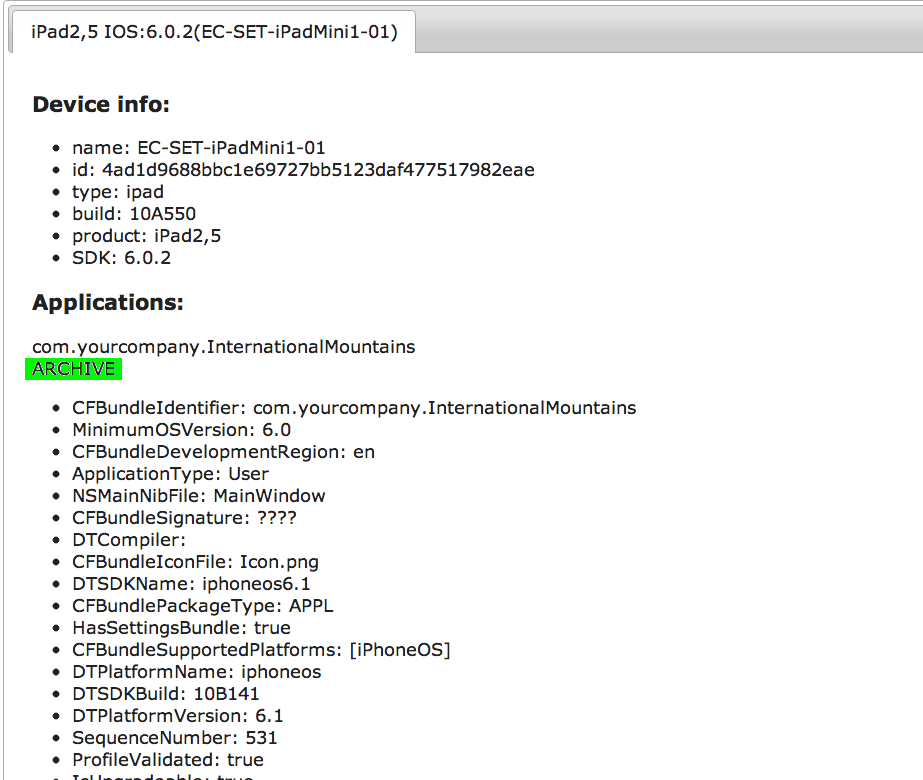

Technical overview
Webdriver is a great automation tool for browsers. It comes with a very clean API that describes how users can interact with a browser. The same API can be used for ios automation as well. In the end, whatever you test, as long as the user interacts with a GUI, it's always "find something" and then "interact with it". Using that API for ios automation has 2 main advantages : - it's a proven, stable API that is about to become a W3C standard - it decouples the remote implementation from the local client. Selenium already comes with Java, C#, Python, Ruby clients. You can reuse whichever one your confortable and focus on the business logic of your tests instead of having to learn a new API.System requirements for OSX
ios-driver is built upon 2 different frameworks from Apple.
For native apps, it uses the UIAutomation framework from Apple.docYou need xcode with an IOS SDK > 5.0. To check :
$ xcodebuild -showsdks
it should return something like :
Mac OS X SDKs:
Mac OS X 10.6 -sdk macosx10.6
Mac OS X 10.7 -sdk macosx10.7
iOS SDKs:
iOS 5.1 -sdk iphoneos5.1
iOS Simulator SDKs:
Simulator - iOS 4.3 -sdk iphonesimulator4.3
Simulator - iOS 5.0 -sdk iphonesimulator5.0
Simulator - iOS 5.1 -sdk iphonesimulator5.1
Simulator - iOS 6.0 -sdk iphonesimulator6.0
Simulator - iOS 6.1 -sdk iphonesimulator6.1
If you have iOS 5.0 or above in the Simulator SDKs, the UIAutomation part of ios-driver will work.
For mobile web, or UIWebviews in hybrid apps ( beta ), it uses the remote webkit debug protocol. That requires ios 6+ and safari6+. If you don't have that, the native part of ios driver will still work, but you won't be able to test mobile web pages on safari, or to interact with UIWebviews using dom selectors.
The server is written in Java.
$ java -version
will return the version you're currently running, or prompt you to install it.
Getting a test application
( for the doc example, I'll use the apple app InternationalMountains You need to attach an app that will work with UIAutomation. You can use xcodebuild command line ( from you CI for instance ) or use the xcode UI.
With the UI : from the menu bar, Product > Profile
Select Automation. That will build the app and start Instruments. You can close Instruments. From xcode, select Organizer > Projects You will have the application in the folder mentioned in Derived data. It will be a folder that looks like : ~/Library/Developer/Xcode/DerivedData/InternationalMountains-cjnsqcubuvgivjgopgboswocznce/
from there navigate to /Build/Products/Debug-iphonesimulator and take you application. ( YourAppName.app )
Save it in a more convenient path, for instance ~/Documents/build/myapp.app
Launching ios-driver
Download server-standalone-1.0.0-SNAPSHOT.jar
Before the first run you will need to update the MobileSafari Info.plist to allow ios-driver to edit it
sudo chmod 666 /Applications/Xcode.app/Contents/Developer/Platforms/iPhoneSimulator.platform/Developer/SDKs/iPhoneSimulator*.sdk/Applications/MobileSafari.app/Info.plist
cd to the folder where you downloaded the jar, and run
$ java -jar ios-server-0.5.0.jar -aut ~/Documents/build/myapp.app -port
4444
You should see in the following log of the terminal :
43:49:493 INFO IOSServer.init server status: http://0.0.0.0:4444/inspector/ tests can access the server at http://0.0.0.0:4444/wd/hub server status: http://0.0.0.0:4444/wd/hub/status using xcode install : /Applications/Xcode46-DP2.app using IOS version 6.1 ios >= 6.0. Safari and hybrid apps are supported. Applications : --------------- CFBundleName=Geocoder,CFBundleVersion=1.2 CFBundleName=InternationalMountains,CFBundleVersion=1.1 CFBundleName=Safari,CFBundleVersion=8536.25 CFBundleName=UICatalog,CFBundleVersion=2.10 CFBundleName=UICatalog,CFBundleVersion=2.10 CFBundleName=Safari,CFBundleVersion=8536.25 2013-01-29 20:43:49.506:INFO::jetty-7.2.0.v20101020 2013-01-29 20:43:49.568:INFO::Started SelectChannelConnector@0.0.0.0:4444
check that the application is recognized by opening a browser and navigating to : http://localhost:4444/wd/hub/status
You should see a json object with all the info about the app.
{
"class": "org.openqa.selenium.remote.Response",
"hCode": 228832089,
"sessionId": "3dcc2e66-ebf8-4e96-8579-82f06c6b2b61",
"status": 0,
"value": {
"build": {
"revision": "b0e9250cafe9870fc3b0a0224cb6e8d242aa1374",
"time": "20130129-1201",
"version": "0.5.0-SNAPSHOT"
},
"ios": {"simulatorVersion": "6.1"},
"java": {"version": "1.6.0_37"},
"os": {
"arch": "x86_64",
"name": "Mac OS X",
"version": "10.8.1"
},
"supportedApps": [
{
"CFBundleDevelopmentRegion": "en",
"CFBundleExecutable": "InternationalMountains",
"CFBundleIconFile": "Icon.png",
"CFBundleIdentifier": "com.yourcompany.InternationalMountains",
"CFBundleInfoDictionaryVersion": "6.0",
"CFBundleName": "InternationalMountains",
"CFBundlePackageType": "APPL",
"CFBundleSignature": "????",
"CFBundleSupportedPlatforms": ["iPhoneSimulator"],
"CFBundleVersion": "1.1",
"DTPlatformName": "iphonesimulator",
"DTSDKName": "iphonesimulator5.1",
"LSRequiresIPhoneOS": true,
"NSMainNibFile": "MainWindow",
"UIDeviceFamily": [1],
"applicationPath": "/Users/freynaud/build/InternationalMountains.app",
"resources": {"CFBundleIconFile": "/wd/hub/resources/hash=-674408620"},
"sdkVersion": "6.1",
"simulator": true,
"supportedDevices": ["iphone"],
"supportedLanguages": [
"zh",
"fr",
"en"
],
}
Command line parameters
-beta
Enables beta functionality, this is funcationality which is still under development and may not work in all instances. Currently a lot of the beta functionality is centered around real device support.
-host
IP of the node, this needs to be specified as guessing the correct IP can lead to problems - it's complicated by the host machine possibly having multiple addresses.
-port
Specify the port for ios-driver to run on, the default is 5555.
-folder
Absolute path of a folder to monitor for new applications.
Acceptable file formats are *.ipa, *.app & *.zip.
Any apps stored in the folder when ios-driver launches will be automatically added to the desired capabilities, real device archived apps will also be backed up to this location.
The default location is [running folder]/applications
-app, -aut
Location of the application under test. Absolute path or URL expected.
-hub
The registration url of your Selenium grid hub, for example: http://localhost:4444/grid/register. If specified ios-driver will register as a node on your grid. It does not include the nodes capabilities on registration as we also provide a custom remote proxy which polls the node looking for updated capabilities, see Scale for more details.
-proxy
specify a custom remote proxy to use with ios-driver nodes, see Scale for more details.
-sessionTimeout
Specify the maximum session timeout [seconds], the default is 1800 seconds [30 minutes].
Configuring the system to support multiple SDK for the simulator
doc todo.Real Devices
In order to run tests on real devices you need to enable beta functionality by specifying -beta when you launch ios-driver.
When you connect a device the server will output something like:
39:28:021 INFO DeviceStore.onDeviceAdded ADDED : EC-SET-iPadMini1-01,IOS 6.0.2[4ad1d9688bbc1e69727bb5123daf477517982eae]
If you have deployed an application to the device which has had automation enabled like so, you need to archive this application before it will be added to the ios-driver capabilities and therfore be testable. In order to archive the application, navigate to the ios-driver devices page http://localhost:5555/wd/hub/devices/all. Under the application name click on ARCHIVE.

Once you've archived the application you should now see it listed on http://localhost:5555/wd/hub/capabilities/all
com.yourcompany.InternationalMountains on iphone
{ "BuildMachineOSBuild": "12D78", "CFBundleDevelopmentRegion": "en", "CFBundleExecutable": "InternationalMountains", "CFBundleIconFile": "Icon.png", "CFBundleIdentifier": "com.yourcompany.InternationalMountains", "CFBundleInfoDictionaryVersion": "6.0", "CFBundleName": "InternationalMountains", "CFBundlePackageType": "APPL", "CFBundleResourceSpecification": "ResourceRules.plist", "CFBundleSignature": "????", "CFBundleSupportedPlatforms": ["iPhoneOS"], "CFBundleVersion": "1.1", "DTCompiler": "", "DTPlatformBuild": "10B141", "DTPlatformName": "iphoneos", "DTPlatformVersion": "6.1", "DTSDKBuild": "10B141", "DTSDKName": "iphoneos6.1", "DTXcode": "0461", "DTXcodeBuild": "4H512", "LSRequiresIPhoneOS": true, "MinimumOSVersion": "6.0", "NSMainNibFile": "MainWindow", "UIDeviceFamily": [1], "applicationPath": "/Users/gabell/github/ios-driver-dev/applications/com.yourcompany.InternationalMountains.ipa.unzipped/payload/InternationalMountains.app", "device": "iphone", "deviceAlt": [ "iphone", "ipod" ], "sdkVersion": "6.0.2", "simulator": false, "supportedLanguages": [ "zh", "fr", "en" ], "timeHack": false, "uuid": "4ad1d9688bbc1e69727bb5123daf477517982eae", "variation": "Regular" }
com.apple.mobilesafari on iphone(Simulator)
{ "CFBundleDevelopmentRegion": "English", "CFBundleDisplayName": "Safari", "CFBundleExecutable": "MobileSafari", "CFBundleIcons": {"CFBundlePrimaryIcon": { "CFBundleIconFiles": [ "icon~iphone.png", "icon~ipad.png", "icon@2x~iphone.png", "icon@2x~ipad.png", "icon-table.png", "icon-table@2x.png", "icon-spotlight~ipad.png", "icon-spotlight@2x~ipad.png" ], "UIPrenderedIcon": true }}, "CFBundleIdentifier": "com.apple.mobilesafari", "CFBundleInfoDictionaryVersion": "6.0", "CFBundlePackageType": "APPL", "CFBundleShortVersionString": "6.0", "CFBundleSignature": "????", "CFBundleSupportedPlatforms": ["iPhoneSimulator"], "CFBundleURLTypes~ipad": [ { "CFBundleURLIsPrivate": true, "CFBundleURLName": "Web App URL", "CFBundleURLSchemes": ["webclip"] }, { "CFBundleURLName": "Web site URL", "CFBundleURLSchemes": [ "http", "https" ] }, { "CFBundleURLName": "FTP URL", "CFBundleURLSchemes": ["ftp"] }, { "CFBundleURLName": "Web Search URL", "CFBundleURLSchemes": ["x-web-search"] } ], "CFBundleURLTypes~iphone": [ { "CFBundleURLIsPrivate": true, "CFBundleURLName": "Web App URL", "CFBundleURLSchemes": ["webclip"] }, { "CFBundleURLName": "Web site URL", "CFBundleURLSchemes": [ "http", "https" ] }, { "CFBundleURLName": "Radar URL", "CFBundleURLSchemes": [ "rdar", "radar" ] }, { "CFBundleURLName": "FTP URL", "CFBundleURLSchemes": ["ftp"] }, { "CFBundleURLName": "Web Search URL", "CFBundleURLSchemes": ["x-web-search"] } ], "CFBundleURLTypes~ipod": [ { "CFBundleURLIsPrivate": true, "CFBundleURLName": "Web App URL", "CFBundleURLSchemes": ["webclip"] }, { "CFBundleURLName": "Web site URL", "CFBundleURLSchemes": [ "http", "https" ] }, { "CFBundleURLName": "Radar URL", "CFBundleURLSchemes": [ "rdar", "radar" ] }, { "CFBundleURLName": "FTP URL", "CFBundleURLSchemes": ["ftp"] }, { "CFBundleURLName": "Web Search URL", "CFBundleURLSchemes": ["x-web-search"] } ], "CFBundleVersion": "8536.25", "DTPlatformName": "iphonesimulator", "DTSDKName": "iphonesimulator6.1", "LSRequiresIPhoneOS": true, "SBMatchingApplicationGenres": [ "Productivity", "Utilities" ], "SBUsesNetwork": 3, "SafariProductVersion": "6.0", "UIApplicationDisableLegacyAutorotationKey": true, "UIBackgroundModes": [ "audio", "continuousFallback" ], "UIDeviceFamily": [ 2, 1 ], "UIHasPrefs": true, "UISupportedInterfaceOrientations": [ "UIInterfaceOrientationPortrait", "UIInterfaceOrientationLandscapeLeft", "UIInterfaceOrientationLandscapeRight" ], "UISupportedInterfaceOrientations~ipad": [ "UIInterfaceOrientationPortrait", "UIInterfaceOrientationLandscapeLeft", "UIInterfaceOrientationLandscapeRight", "UIInterfaceOrientationPortraitUpsideDown" ], "applicationPath": "/Applications/Xcode.app/Contents/Developer/Platforms/iPhoneSimulator.platform/Developer/SDKs/iPhoneSimulator6.1.sdk/Applications/MobileSafari.app", "device": "iphone", "deviceAlt": [ "ipad", "iphone", "ipod" ], "device_Alt": [ "iphone", "ipad" ], "sdkVersion": "6.1", "sdkVersion_Alt": [ "5.0", "5.1", "6.0", "6.1" ], "simulator": true, "supportedLanguages": [ "ko", "no", "cs", "pl", "el", "sv", "in_ID", "ja", "es", "pt_PT", "hu", "fi", "uk", "de", "ca", "ms", "pt", "ru", "en", "sk", "th", "en_GB", "zh_TW", "nl", "fr", "zh_CN", "tr", "it", "da", "iw_IL", "hr", "vi", "ar", "ro" ], "timeHack": false, "variation": "Regular" }
If you can see the application listed you're ready to start testing on a real device!